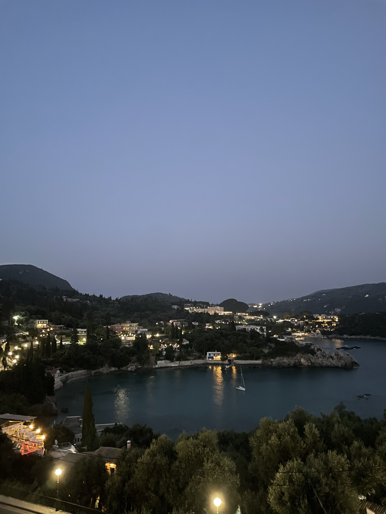
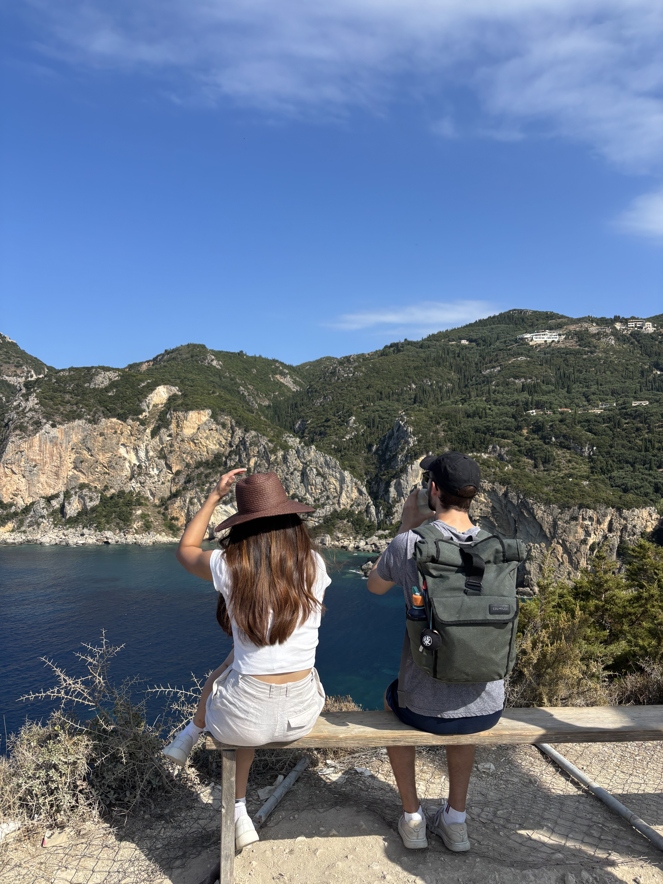

22nd August 2025
We arrived into Corfu in the afternoon on Friday and were greeted with a welcome heat that we hadn’t experienced since Australia. We made our way to Paleokristas on bus after stopping for snacks at Lidl, including some Oregano chips! We met with Tom and Zoe at our hotel where we stopped for a quick dinner and to catch up.

23rd August 2025
Our first full day in Corfu we started with a hike to a monastery on top of the hill the a superb view out along the water. Then we took our first trip into the water to cool off. We were able to see lots of fish swimming around us! For lunch we ate some gyros and headed back to the hotel to enjoy the pool. After a quick rest at the hotel we went to a second beach where we swam out far to some rocks which I climbed and jumped off. We went to a fancy restaurant for dinner and finished the night off with some delicious baclava and Percy pigs.